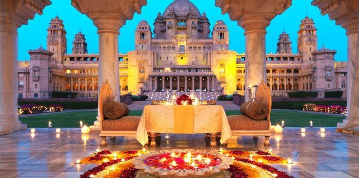
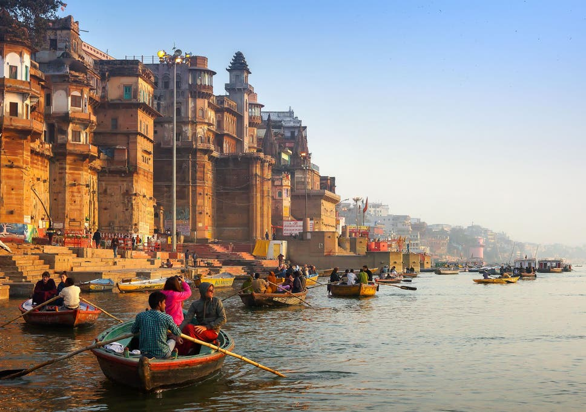

Our Homeland India
Posted 12/10/2019 by Aditya Singh

It is often said that India is not a country, but a continent. Stretching from the frozen summits of the Himalayas to the tropical greenery of Kerala, India encompass an incomparable range of landscapes, cultures and people. Travelling in India allows you to meet people of several from the world’s great faiths, encounter temple rituals performed since the time of the Egyptian Pharaohs, and see ancient buildings erected centuries before the Taj Mahal.

To visit India as a foreigner is easier than ever before. A growing number of cities boast gleaming new metro systems, and are linked by faster highways and speedier, more comfortable trains. Affordable but extravagant hotels and a thriving restaurant in the modern cities like Mumbai, make India an attractive place to visit. However, more than twenty percent of India’s inhabitants remain below the poverty line. No other nation on earth has slum settlements on the scale of those in Delhi, Mumbai and Kolkata, nor so many malnourished children, uneducated women and homes without access to clean water and waste disposal. But for all its jarring juxtapositions, paradoxes and frustrations, India remains an utterly compelling destination. For those asking why travel to India, trust us when we say its distinctive patina casts a spell that few forget from the moment they step off the plane. Love it or hate it, India travel will shift the way you see the world.

India has 29 states, with major Mughal Empire landmarks and mountain ranges in the north, and palm lined beaches and jungles in the south. It’s unlikely that you will travel to India and cover the whole country in your first visit. It’s better to focus on a couple of regions and do them justice, in order to make the most of your time. You can decide what sort of pace you want and go to particular areas accordingly. Indian cities like Mumbai, Delhi, Jaipur, Hyderabad and Chennai are undoubtedly adrenaline-fuelled, upbeat places. But it is possible to travel around India for a long time without setting foot in one, instead meandering through the more relaxing, rural areas. The Golden Triangle is the most travelled circuit in the country, taking you from impressive monuments to serene landscapes. Here you’ll cover Delhi, the Pink City of Jaipur and Agra, home of the Taj Mahal. The state of Rajasthan is often the most popular with travellers, thanks to its mix of mesmerising desert landscape and unique cities, but there are plenty of other areas of India to discover for the second- or third-timer or travellers with more time on their hands. On the other side of the country, the palm-fringed coast lines of Goa draw crowds of international and domestic tourists to their lively beach resorts. Just down the coast, the quieter Kerala offers some of India’s best tropical beaches, tea and spice plantations and national parks housing elephants, tigers and monkeys.

Once in India, getting around is another thing to wrap your head around and requires some forward planning. Intercity transport in India isn’t considered the most comfortable, quick or efficient, but it is affordable. Wherever you need to go, there’s most likely a route there. The main options are train or bus, but also occasionally plane or boat, and within cities, there are also rickshaws and metro systems. For longer distances, make use of the cheap long-distance trains, on which journeys are an experience in themselves. If you’re willing to pay a little more for the higher classes of carriage, you can expect to have a reasonably hassle-free and comfortable journey. Cheap short-haul flights are another good option for India travellers.